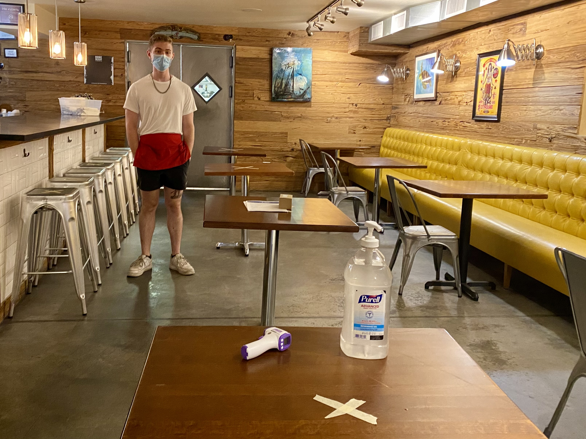
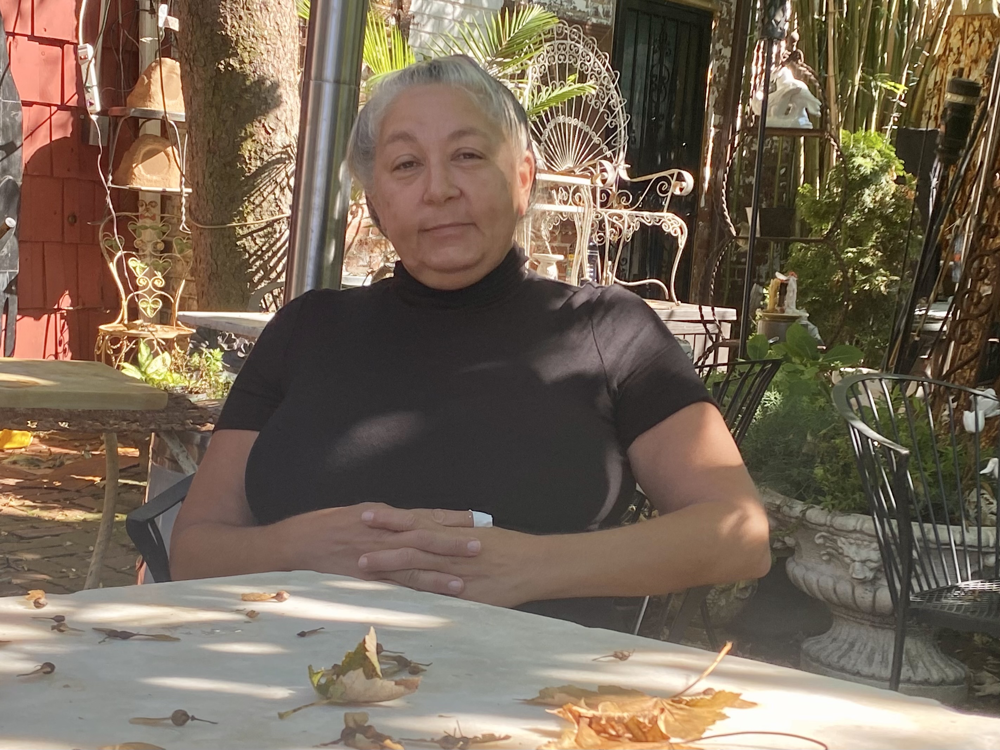

Indoor dining reopens in NYC without much fanfare and a lot of new rules
Keith Paul Medelis
Friday, October 2

An empty dining room awaits the first indoor dining guests at Archies Tap and Bar. Julian Gannon, 21, has been a server here for a few years. He lives next door with his mother, who happens to be the Director of
Health and Human Services for Ruben Diaz, Jr., Bronx Borough President. She's not worried. So neither is he.
After a long period of absence, indoor dining reopened in New York City this past Wednesday. On Bronx’s City Island, a community known for both seafood and already booming outdoor dining scene, we spent the day with
restaurant owners who are navigating the regulations for the first time.
The city released an eight-page manual of the new list, including both legal and “recommended” best practices.
Restaurants can only open at 25%. “That is not even enough to pay a Verizon bill,” says Alexander Petrovsky, chef and owner of Archies Tap and Bar. Petrovsky is a community gathering place for locals, hosting Representative Ocascio-Cortez’s
victory party in 2019. While the dining room opened on Wednesday, it remained empty as diners used the backyard.

Calliope Rigos, 57, fell into cooking at an early age after deciding between culinary school and the Coast Guard. "I'm not sure I made the right choice," she says, envious of her retired friends, a luxury
she may never be able to afford.
“It’s hard to make people feel comfortable,” says Calliope Rigos, owner of Black Whale as she tries to figure what the best location will be for the thermometer to monitor the temperature of her customers upon entering. Rigos is lucky to
have a backyard that she is very proud of and hopes her customers will be in no rush to head indoors.
Should you decide to venture indoors, we’ve compiled the essential rules that restaurants must follow. We also recommend a hearty tip.
The new regulations:
Physical distancing
Dining is only allowed at 25% capacity. Tables must be placed six feet apart or place physical barriers between seating if distancing is not possible. Ten or more people are not allowed at one table and
seating at the bar seating in any capacity is not allowed.
Temperatures and contact tracing
Patrons temperature must be screened upon entering. No temperature greater than 100°F can be admitted. Guests must fill out contact tracing information before entering; all guests are required to provide
their full name, address, and phone number.
Face covering
All employees must wear a face covering at all times. The restaurant is responsible for ensuring that patrons wear face coverings when not seated at their table. .
Hygiene
Hands should be washed and encouraged from
the restaurant; gloves must be worn and changed frequently. Soap, warm water, disposable paper towels, and alcohol-based sanitizer must be readily available. High touch surfaces must be disinfected frequently.
Air filtration
Air handling systems must be installed with a minimum MERV-13 filter as documented by a certified HVAC technician. Windows should be open when possible.
Communication
Restaurants are encouraged to develop a plan for notifying employees, posting regulations and enforcing proper conduct. Individuals who observe violations can report issues by
calling 833-208-4160 or by texting ‘VIOLATION’ to 855-904-5036.
Photo credit: Keith Paul Medelis
Icons from the Noun Project, from creators Victoruler and Nawicon.